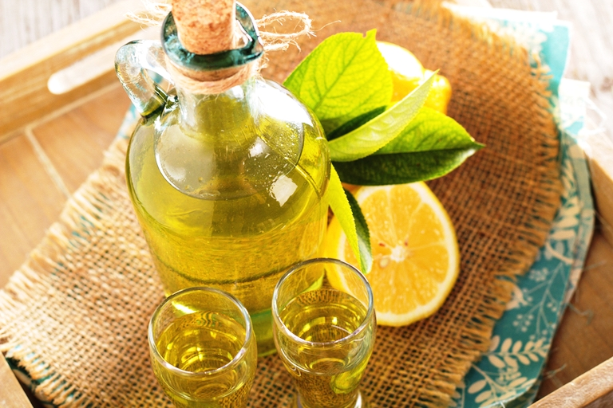

Начнем разговор с крепких ликеров. Они, как и любые другие крепкие напитки, требуют для себя горячих калорийных блюд, сопровождающихся острыми и пикантными приправами. Однако, при подборе последних следует учитывать особенности букета каждого конкретного ликера.
ЛИКЕР «АЛАЖСКИЙ ТМИННЫЙ»
Так, для ликера «Алажский тминный» подойдет классический вариант: мясо без подливок и соусов, тушеное или хорошо прожаренное, со множеством овощей, картофелем и зеленым горошком, поданными по отдельности, так, чтобы каждый сидящий за столом смог выбрать для себя те овощи, которыми посчитает необходимым сопроводить букет этого ликера.
Лучше всего, если овощи будут лишены своих острых вкусов в результате легкой проварки или бланшировки в масле. Зелень и пряности к мясу подавать не следует.
Таким образом, «Алажский тминный» лучше всего подавать перед горячими блюдами (только не горячими блюдами южных национальных кухонь) без добавления продуктов, могущих изменить или нейтрализовать вкус содержащегося в ликере тминного оттенка.
Неплохим вариантом оттенения букета данного ликера могут послужить несколько сортов острого сыра, поданные на белых фарфоровых тарелках. Каждый сорт подается по отдельности, обязательно с указанием для гостей каждого сорта с небольшими комментариями о его остроте, пикантности и особых добавках.
Тминные ликеры следует подавать не слишком холодными, чтобы дать возможность полностью прочувствовать их тминную составляющую. Перелейте ликер из бутылки в специальный графин для ликеров. Наливайте ликер в прогретую посуду. Для этого поставьте бокалы в самое теплое место в комнате за два-три часа до того, как начнете сервировать стол.
Еще один вариант закуски для тминного ликера — грузинские сыры из козьего молока. Они в силу своего свежего вкуса и сочности смогут хорошо оттенить тминную нотку ликера. Одно замечание: сыры следует выбирать не слишком острые, иначе оттенок букета ликера может потеряться. Поэтому отдайте предпочтение более молодому сыру. Нарежьте его небольшими, но толстыми пластинками и подайте холодным.
ЛИКЕР «АНАНАСОВЫЙ»
Для ликера «Ананасовый» хорошо подать нарезанные дольками фрукты и цитрусовые самых разнообразных видов и сортов, чтобы дать возможность гостям, варьируя их, подобрать букет сочетаний ароматов по собственному вкусу.
Для этого возьмите большие круглые или овальные тарелки и разложите на них нарезанные фрукты либо одним сортом на одну тарелку, либо составив из них затейливые рисунки. При этом следите, чтобы кислые фрукты сочетались с кислыми, а сладкие — со сладкими. Также вы можете поэкспериментировать с цветом, составив картины из кусочков фруктов прямо на тарелках.
ЛИКЕР «АНИСОВЫЙ»
Напиток можно сопроводить тушеными овощами, подобранными по калорийности. Например, только наиболее калорийные овощи: кабачки, баклажаны, картофель. Или менее калорийными: капустой, цуккини, морковью и т. д. Потушите овощи крупными пластинками и красиво разложите на тарелках.
Помимо этого, вы можете сопроводить «Анисовый» ликер печеной тыквой, начиненной сладкими фруктами: изюмом, курагой и инжиром. Запеките тыкву в духовке и подавайте в теплом или холодном виде дольками с начинкой.
Из мясных блюд к «Анисовому» ликеру подойдут куриные крылышки, тушенные в жирной сметане, поданные в маленьких глубоких плошках без гарнира с поджаренными кусочками белого пшеничного хлеба.
Перед подачей ликер следует охладить, чтобы проявить весь холодный спектр оттенков анисового букета. Перелейте охлажденный напиток в графин для ликеров. Можно украсить бокалы при помощи сахарного песка, в который окунуть их края, слегка смоченные разведенным лимонным соком.
ЛИКЕР «АПЕЛЬСИНОВЫЙ»
Его следует сопровождать заливной рыбой. Хорошо, если это будет сазан. Залейте кусочки рыбы достаточным количеством бульона и поместите в холодильник до застывания.
Подавайте рыбу в специальных чашечках вместе с застывшим бульоном, веточкой зелени и половинкой сваренного вкрутую яйца. Следует выпить немного ликера, а потом закусить сначала небольшим количеством застывшего бульона, затем кусочком рыбной мякоти, ну а следом — веточкой зелени.
Можно подать поджаренные куриные ножки небольшого размера с хрустящей корочкой, украшенные веточками зелени на плоских тарелках.
ЛИКЕР «АПЕЛЬСИНОВЫЙ»
следует наливать в холодные бокалы непосредственно перед употреблением. До этого напиток должен находиться в графине для ликеров. Наливайте в него напиток непосредственно перед подачей.
ЛИКЕР «БЕНЕДИКТИН»
Ликеру «Бенедиктин сладко-горький» хорошо подойдут блинчики с черной икрой. Блинчики должны быть тонкими и кружевными. Посередине блинчика положите ложку икры и осторожно заверните. Подавайте блинчики холодными, но не из холодильника, чтобы не испортить вкус икры привкусом замороженного масла.
Помимо блинчиков можно сопроводить данный ликер отбивными из телятины, хорошо протушенными на закрытой сковороде в собственном соку или с овощами. Можно подать к отбивным оливки или зеленый горошек. Выложите мясо в центр большого круглого блюда, а по краям распределите овощи или оливки. Обязательно подайте специальную лопаточку для раскладывания мяса по тарелкам.
Пить данный ликер следует в немного подогретом виде.(Для этого подержите бутылку в теплом помещении, а затем перелейте напиток из нее в нагретый графин для ликеров). Это будет способствовать проявлению полного изысканного букета, особенно его медовых и мускатных ноток.
Не стоит выпивать весь бокал сразу же. Смакуйте глоток и закусывайте небольшим кусочком блинчика или мяса для того, чтобы создать диссонанс вкусов, который поможет воспринять всю полноту гаммы ликера.
ЛИКЕР «МЯТНЫЙ»
Он хорош вместе с фаршированными яйцами. Для их приготовления возьмите сваренные вкрутую яйца, разрежьте вдоль. Получившиеся «лодочки» из белка начините фаршем из желтка, шпрот и пряностей. Затем соедините две половинки яйца при помощи шпажек.
Другое блюдо для мятного ликера — холодная мякоть осетрины с лимоном. Отварите рыбу, освободите от кожи и костей, разложите в тарелки и полейте небольшим количеством лимонного сока.
Другой вариант рыбного блюда для мятного ликера — осетрина в кляре. Подавать это блюдо следует холодным на большой тарелке, уложив небольшие кусочки горкой.
Подавайте ликер прохладным, но не холодным, чтобы не погасить присущие ему мятные нотки. Перелейте охлажденный напиток из бутылки в графин для ликеров. Хорошо, если ликер будет налит в холодные стаканы — это не позволит напитку изменить температуру. Не стоит надолго растягивать смакование мятного ликера, согревая его, ведь он должен быть постоянной температуры.
ЛИКЕР «ПРЯНЫЙ»
Этот напиток лучше всего подавать с нейтральными продуктами, например неострыми салатами, рыбой, нежирным мясом и т. д. Не следует подавать к этим блюдам приправы, пряности и острую зелень.
Постарайтесь сделать так, чтобы никакое из блюд не смогло первенствовать над букетом «Пряного» ликера. Например, это может быть тушенная в нежирной сметане говяжья печень, а также утка с яблоками, тушенная в специальной посуде в собственном соку.
Утку следует подавать на блюде, печень — на тарелках с нейтральным гарниром (например, рисом по-монашески).
Подавайте ликер немного подогретым, чтобы оживить составляющие элементы букета. Фужеры лучше всего выбрать резные.
ЛИКЕР «ЮЖНЫЙ»
Для ликера «Южного» подойдут блюда, которые либо смягчат, либо, напротив, подчеркнут его горечь. В первом случае это может быть салат из свежих овощей со сметаной, во втором — морепродукты или копченое филе птицы.
Если вы хотите приготовить салат — добавьте в него много пряной зелени. Если решили подать морепродукты, пусть дополнением к ним станет нарезанный дольками лимон — он оттенит вкус, а также будет хорошо сочетаться с букетом ликера. Если же вы выбрали филе дичи, сопроводите его тонко нарезанными зелеными овощами.
Все блюда подавайте на больших тарелках, предоставив гостям возможность самостоятельно выбрать понравившееся блюдо или попробовать все и оценить сочетание букета ликера со вкусом каждого из них.
Все продукты следует подавать холодными. Перед подачей ликера посуду, предназначенную для него, следует подогреть. Перелейте напиток в теплый графин для ликеров и подавайте на стол.
ЛИКЕР «ШАРТРЕЗ»
Для ликера «Шартрез» подойдут только блюда, позволяющие смягчить его непривычно жгучий вкус.
Это могут быть блюда из белого мяса птицы, например куриное филе, тушенное с неострыми овощами, или жареное филе с картофельными палочками без соуса и приправ.
Еще один вариант смягчающих продуктов — неострые сыры. Возможности выбрать сорт сыра, позволяющий оттенить букет ликера, практически неисчерпаемы. Попробуйте ликер с несколькими сортами сыра, предварительно прокомментировав свои вкусовые ощущения и предложив гостям попробовать поэкспериментировать самостоятельно.
Также вы можете подать к данному ликеру салат из вареного риса с красной рыбой в собственном соку (например, лососиной). Этот салат желательно не солить, так как лососина получает достаточную соленость при заготовке.
Подайте салат в прозрачной салатнице. При желании его можно заправить нежирной сметаной, разведенной майонезом в пропорции 1:2.
Не забудьте подать графин с минеральной водой для гостей, которые, возможно, захотят перемежать обжигающий ликер с нейтральным напитком.
Наливайте «Шартрез» в абсолютно прозрачные бокалы с широкими горлышками, позволяющими перед дегустацией насладиться его неповторимым ароматом. Перед подачей к столу перелейте напиток из бутылки в графин для ликеров и немного охладите на льду или в холодильнике.